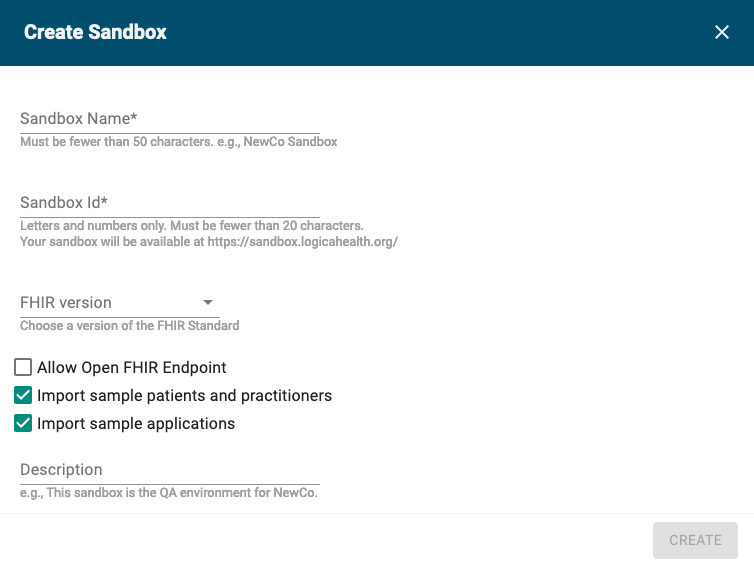

Standing up a FHIR Testing Server
-
What options are available for hosting FHIR data for testing and training?
There are both cloud-based and local options for hosting FHIR servers, with varying levels of capabilities, ease of setup and access, and performance. As always, the best option depends on the specific use case.
This module describes the following options for hosting FHIR data:
- Logica Sandbox
- Docker
- Public Test Servers
The approaches listed in this module are intended to be the quickest and easiest options for setting up a FHIR server for testing and training. Other options do exist, and for production capabilities you may want something more robust, but the options here are the best way to get started fast. The options on this page often include a set of default patient data which can be used for basic testing, or you can load your own data created by Synthea.
1 Logica Sandbox
The easiest option for hosting data is to use a cloud service - no installation is required on your local computer. The other benefits are that registration is free, a common instance can be shared between multiple people, and you do not have to worry about losing everything when you restart your computer.
The Logica FHIR Sandbox is a free service provided by Logica Health that allows the FHIR community to experiment with and develop FHIR applications. The Sandbox supports SMART-on-FHIR and includes a number of pre-installed apps. We recommend the Logica Sandbox as a good first step.
This option does have a few downsides however: you are dependent on the service staying online and providing appropriate security to make sure your data is accessible to you and only to you. Real health data and synthetic data containing alterations you want to keep private should never be uploaded to a Logica sandbox. Anything stored in a Logica sandbox should also have a local backup copy, just in case.
There are no published limits on the Logica Sandbox, in terms of number of Patients, number of Resources, physical size, or bandwidth usage, however we recommend keeping your population as small as possible - both in terms of number of patients and the total amount of data per patient - in order to ensure good performance. Timeouts may occur if you try to upload files larger than roughly 2 MB. If a timeout occurs while uploading a file, wait a few minutes for it to finish processing before trying again - the server will throw an error if you try to upload a second patient while one is already processing.
Signup Steps
To create your own Logica Sandbox, first register at https://sandbox.logicahealth.org. You will need to provide an email address, where you will receive a confirmation email which you should click to activate your new account. Sign in using your email and password and accept the terms of use.
Now you can create a new sandbox by clicking the New Sandbox button. The creation screen is shown below.

Choose a name, ID, and FHIR version that are appropriate for your usage. We recommend enabling the “Allow Open FHIR Endpoint” setting as this will make it easier to load an initial set of data, and it may be disabled later for security.
If you plan to load patients for a specific use case, you may want to disable the “Import sample patients and practitioners” option to ensure only your selected patients are loaded. Feel free to select or deselect the sample applications option - it will have no impact on basic FHIR operations.
After clicking create, it will take ~15 seconds to setup the instance. Once ready, click on the row to go to the dashboard for your server. Feel free to explore the various options and features available, however this guide will not touch on any of them. See the Logica Sandbox Confluence page and FAQs for additional information. For now visit the Settings tab to see your “Open FHIR Server URL” - this is the server base URL that should be used for loading patients in the Loading Synthea Patients section below.
Later, once you have loaded all the patients you want, if you want to require security on the server, return to this Settings tab and click the pencil icon to edit, and uncheck “Allow Open FHIR Endpoint”.
2 Docker-based Options
If for any reason you do not wish to use a cloud-based service like a Logica Sandbox, Docker offers a relatively painless way to get a FHIR server running on your local computer. Any of these options may also be setup to run natively, but using Docker allows you to bypass a lot of the setup and configuration that would otherwise be required.
At its most basic level, Docker is a tool that allows you to run packaged software. Packaging software to run on Docker allows it to be preconfigured, include any additional dependencies it may require, and run on nearly any hardware and operating system. This is in contrast to traditional software which needs to be built separately or even developed separately for Windows and Mac, may need separate libraries to be installed first, and may have a complex setup process. Docker is very commonly used for running servers.
Key terms: - Images are the packaged software definition. Images are tagged with a version so that you can use either the latest available, or a specific other version if necessary. Images may be layered on top of one another in order to combine them into a single software package. - Containers are the running instances of images. A container can be thought of as a separate virtual computer that is running the image.
Detailed technical documentation on Docker is available at https://docs.docker.com/get-started/overview/.
While Docker-based options generally require some configuration, especially when you want your test data to persist after you reboot, they can be setup quickly and do not require programming knowledge to get started. Each of these options can be installed either locally on your own computer if you will be the only person using it, or on a shared server for ease of access by multiple people. Your options may vary based on your organization’s security requirements. The following instructions are intended for a Windows-based or Mac-based local installation.
Assume that Docker-based options will not persist data unless they specifically state that they do by default or you specifically configure them to do so. For example if you shut down Docker or restart your computer any patients you had loaded will be gone the next time you start up the server. Please review all documentation before loading a lot of data to make sure you do not lose work. Generally it is not possible to configure a live running Docker container to enable persistence; they need to be started with the proper settings.
In order to use these options, you must first install Docker Desktop from https://www.docker.com/products/docker-desktop/. (Note that Docker Desktop is generally not free for organizations and professional use. There are free alternatives however they require more manual effort to get everything working. Setting up an alternative to Docker is outside the scope of this page.)
Once Docker is installed, launch Docker Desktop, and confirm it is running with the docker ps command on the command line. This command shows you the currently running Docker containers. If you have just installed Docker for the first time, this should print only a header row:
$ docker ps
CONTAINER ID IMAGE COMMAND CREATED STATUS PORTS
$Git is also required for several of the Docker-based options.
2.1 Logica Sandbox Community Edition
This set of Docker images mirrors the public Logica Sandbox, but can be run locally. If you like the full suite of what Logica provides but either want higher performance or do not want to use a fully public Internet service, this is a good option.
Quick Start Make sure Docker is running, then clone the project, change to the directory, and launch the services with the following commands:
git clone https://github.com/logicahealth/sandbox-community-edition.git
cd sandbox-community-edition
docker compose upLaunching the services will take a while the first time as it needs to download the Docker images. Wait until the logging output stops, then open the sandbox at http://sandbox:3001. From here the steps are identical to the steps for the cloud service steps listed above.
Full instructions are available at https://github.com/logicahealth/sandbox-community-edition.
2.2 HAPI
HAPI is the FHIR server implementation that the Logica Sandbox uses under the covers. If all you want is a plain FHIR server to run queries against, without any of the bells and whistles, HAPI is a good option.
To quickly pull and run the HAPI FHIR server on port 8080, make sure Docker is running, and then run the following:
docker pull hapiproject/hapi:latest
docker run -p 8080:8080 hapiproject/hapi:latestWait until the logging output shows Started Application in ___ seconds and you will have a FHIR server running with a base URL of http://localhost:8080/fhir. There is also a web UI for a few actions such as listing and uploading resources at http://localhost:8080/.
For more detail on the HAPI FHIR docker image, see https://hub.docker.com/r/hapiproject/hapi.
2.3 Other Docker Options
If you know that you intend to run research on a server that is not based on HAPI, it may be advantageous to run the same type of FHIR server locally to ensure the capabilities you need for your use case are supported. Details on particular servers is out of scope for this page, but a few links are provided below to Docker setup guides for other common FHIR server implementations.
Other popular FHIR servers include:
3 Public Test Servers
Some options for public test servers are listed on the HL7® Confluence with basic information and limitations of each. A couple notable items:
- HAPI FHIR Reference Server
- Web UI: http://hapi.fhir.org
- DSTU2 Endpoint: http://hapi.fhir.org/baseDstu2
- STU3 Endpoint: http://hapi.fhir.org/baseDstu3
- R4 Endpoint: http://hapi.fhir.org/baseR4
- R5 Endpoint: http://hapi.fhir.org/baseR5
- NLM HAPI FHIR servers
- STU3 Endpoint: https://lforms-fhir.nlm.nih.gov/baseDstu3
- R4 Endpoint: https://lforms-fhir.nlm.nih.gov/baseR4
Note that these are open to the public so there is no guarantee of availability of any data you upload nor of the service itself.
4 Loading Synthea Data
Finally, once your server is running, you can load your Synthea data into it. In this section we assume you are using the default Synthea settings: FHIR R4, Bundles are of type transaction, all resource types are exported, etc., since certain setting changes may affect how you load the data. It is completely fine if you ran Synthea multiple times and your output folder contains several runs all mixed together, but it can be difficult to separate them out if that is the case.
We recommend using the curl utility (which should be available by default on most computers, but if not it can be downloaded from https://curl.se/download.html), with the following arguments:
curl -d @FILE -H 'Content-Type: application/json' SERVERwhere:
FILE is the path to a FHIR Bundle .json file
SERVER is your FHIR server's base URL
-H 'Content-Type: application/json' sets the content type to JSON to ensure the server handles it correctlyIf you strongly prefer a graphical tool, Insomnia, which allows you to invoke APIs such as FHIR endpoints, is a good choice. For uploading multiple files though, the snippets below which call curl in a loop are likely to be the easiest. If you have experience with other tools such as Postman, feel free to use those instead.
The key to loading Synthea patients is to ensure files are loaded in the following order, so that references to resources across files will work correctly. You should not see any error messages when loading files. Replace SERVER in the following examples with your FHIR server’s base URL.
First, load all hospitalInformation*.json files. These contain the Organization resources that are referenced by Encounters in the patient data.
for file in hospitalInformation*.json
do curl -d @$file -H 'Content-Type: application/json' SERVER
doneSecond, load all practitioner*.json files. These contain Practitioners and PractitionerRoles.
for file in practitioner*.json
do curl -d @$file -H 'Content-Type: application/json' SERVER
doneFinally, load all individual patient files. All patient file names start with a capital letter, unlike the hospital and practioner files above, so we can use that to select just the files that were not already uploaded in the previous two steps.
for file in [A-Z]*.json
do curl -d @$file -H 'Content-Type: application/json' SERVER
doneOnce all the data has been loaded onto your server, you can access it as any other FHIR server by making API calls to the various resource endpoints.